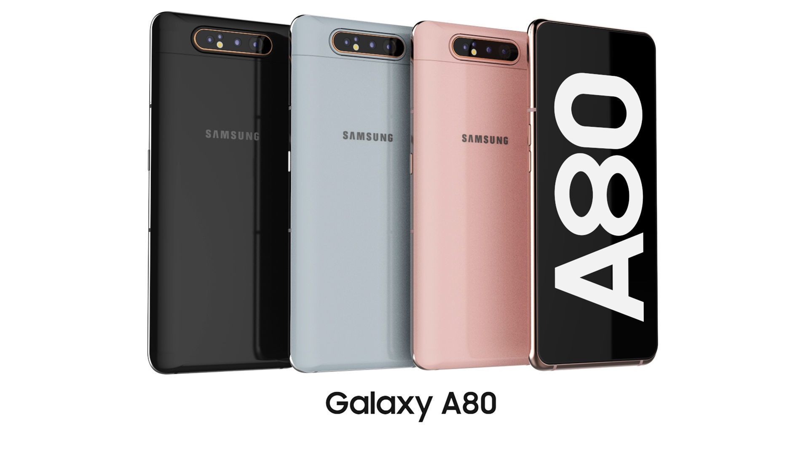
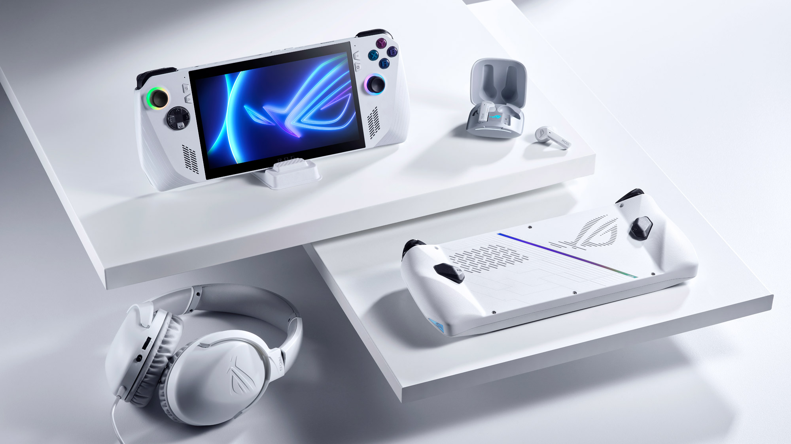
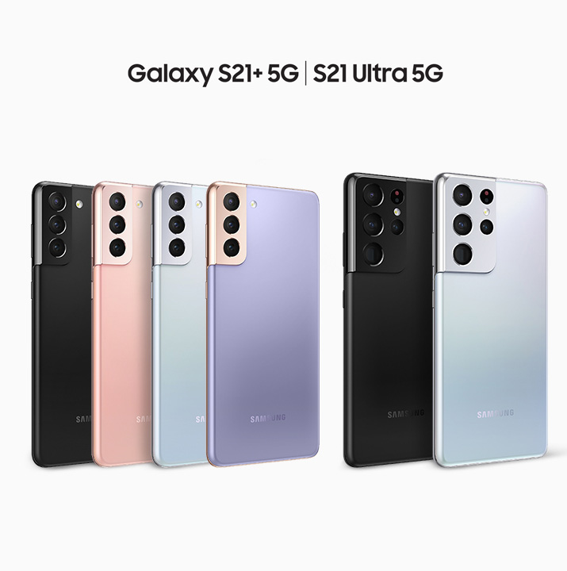

The Samsung Galaxy A80, released in 2019, has been my daily driver for 5 years now. As it was new back then the snapdragon 730 chipset has left a lasting impression on me. It has been a great phone with good hardware and software support till 2022.
After 5 years of usage, the phone has impressed me in various ways. But after 2 years of no software updates and the deteriorating hardware, it is showing problems and is a little sluggish at times. But for sticking 5 years with me, this has been a great smartphone to use till date.
Read more...Rog Ally is a portable gaming device. which is running windows 11 and can play various computer games which are available in steam and other 3rd party game stores. Having Windows OS also gives the ROG Ally an added edge over other portable gaming devices.
The Rog Ally is a competetion to the steamdeck which is also a portable gaming console running the SteamOS and could also run windows 11. As for comparing, the Rog Ally was more reasonable price for the quality of this product, and could compete with some computers and laptops.
Read More...If i could buy any smartphone that is reasonable and affordable. But also is productive and powerful, but not too expensive. It should be able to run all my workloads efficiently. This is the question that always comes to my mind when talking about buying new phones. As 2025 is comming around the corner and many new smartphone are being developed and are being launched.
The smartphone that i would like to own is Samsung S21 ultra, as for choosing samsung brand is because it runs an android and is able to run all my favorite apps, games, web and is also able to run 3rd party software. And for choosing the brand "Samsung" is it can run samsung dex which is opreating system that runs like desktop system and it can be compared to flagship form other brands even still 3years after it could compare with todays smartphones but not the flagship that has been released in those years.